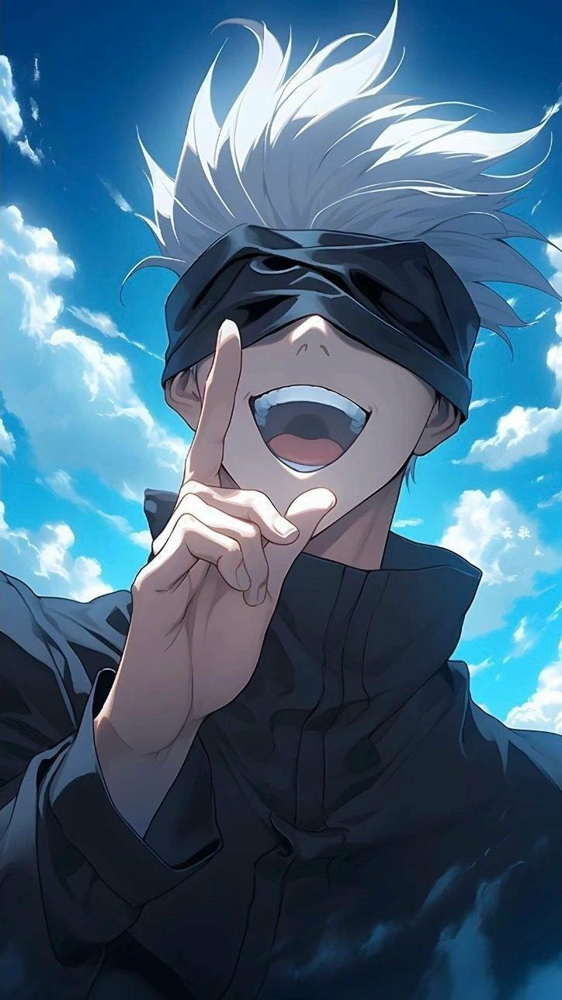

__________________________________________________________________________________________________________________________________________________________________________
Conheça mais Sobre o personagem principal do site. :
Satoru Gojo é um personagem fictício da seríe de anime e mangá Jujutsu Kaisen criado por Gege Akutami. Ele fez sua primeira aparição na animação prequela Jujutsu Kaisen 0 como o mestre de Yuta Okkotsu, um adolescente amaldiçoado.

Satoru Gojo, de Jujutsu Kaisen, possui poderes excepcionais baseados em sua Técnica Ilimitada e seus Seis Olhos. Ele pode manipular o espaço e a energia de maneiras complexas, criando efeitos como infinito, azul, vermelho e o poderoso Vazio Roxo. Principais poderes:
#1 Seis Olhos:
Uma característica ocular única que confere a Gojo percepção aprimorada, capacidade de processamento cerebral e controle preciso da Técnica Ilimitada.
#2 Técnica Ilimitada (Mugen):
Uma técnica que lhe permite manipular e distorcer o espaço em nível atômico.
#3Infinito:
Uma técnica "neutra" que cria um infinito entre ele e o atacante, desacelerando ataques até que parem de se mover, ou pelo menos, pareçam.
#4 Azul:
Uma técnica de atração que cria um centro de gravidade, esmagando tudo o que estiver ao redor.
#5 Vermelho:
Uma técnica de repulsão que inverte as propriedades do Azul, criando uma força poderosa que repele objetos.
#6 Vazio Roxo:
Uma técnica avançada que combina Azul e Vermelho, criando uma massa imaginária que destrói tudo em seu caminho.
#7
Reversão da Técnica Amaldiçoada:
Gõjo pode usar a Reversão da Técnica Amaldiçoada para curar seus ferimentos.
#8 Manipulação da Gravidade, Física e Probabilidade:
O Vazio Azul, por exemplo, é um subproduto da amplificação de números ilimitados e negativos, criando situações impossíveis como a criação de objetos inexistentes.
#9 Telecinese:
Pode induzir força invisível para esmagar alvos.
#10 Manipulação da Matéria:
Suas habilidades funcionam em nível atômico.
#11 Velocidade e Durabilidade:
Gojo possui velocidade e durabilidade impressionantes, conseguindo acompanhar movimentos rápidos e suportar golpes severos, além de se recuperar rapidamente.
Em resumo, Gojo é um mestre em manipular o espaço e a energia, utilizando a Técnica Ilimitada e seus Seis Olhos para criar efeitos destrutivos, defensivos e de cura, além de possuir outras habilidades físicas sobre-humanas.